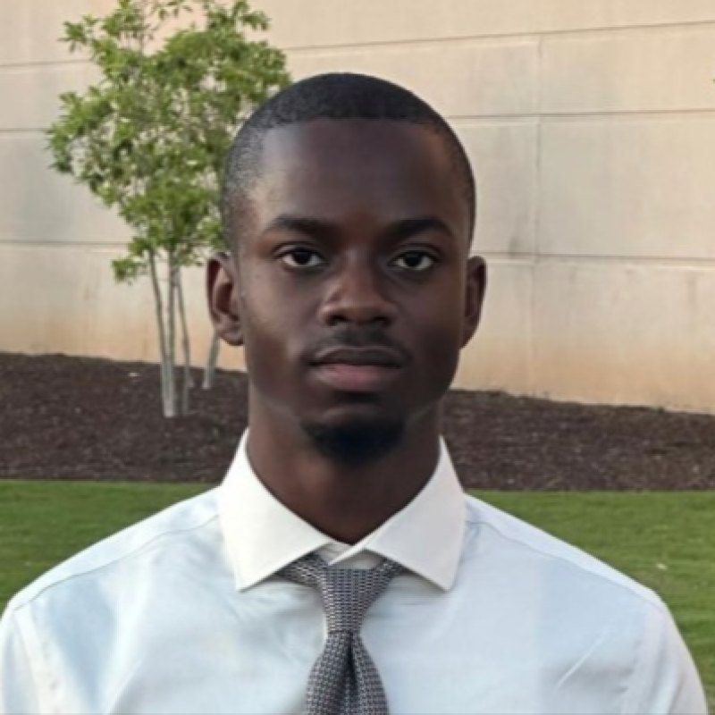

Building close
to the hardware.
I’m Khalid, a Computer Engineering student at Georgia Tech. I’m interested in every layer of a computer, but I'm leaning towards systems programming and computer architecture.
How I got here
I used a computer for the first time in 2012, to visit Starfall, and wrote my first program in 2018, in ProcessingJS on Khan Academy.
My first engineering job came before college. At Vital Systems in Buford I was an electrical engineering intern: I loaded firmware onto FPGA-based CNC control boards, ran the functional tests that decide whether a board is ready for production, and soldered PCBs. That’s where I learned to follow a problem all the way down to the part that causes it.
Since then I have done machine learning research, co-founded Classify, and started computer engineering at Georgia Tech.
What I like to work on
I want to be a well-rounded developer, so I try to work at every layer.
-
Right on the silicon
I like knowing what the hardware is doing underneath the code. I wrote a CHIP-8 interpreter in C from scratch: 4 KB of memory, sixteen registers, a subroutine stack, and instructions decoded with masks and shifts. It now runs on this site, compiled to WebAssembly.
-
Software people use
Classify is a virtual tutor that reads students’ handwritten work step by step, shows them where they went wrong and guides them through fixing it instead of giving the answer. I wrote the image preprocessing and designed the database, on a team of six that won a $7,500 Franklin CREATE! grant.
-
Down to the component
At Vital Systems I worked on FPGA-based CNC control boards: loading firmware, running functional tests and soldering PCBs. When a board failed, I traced it to the one faulty part and replaced it.
At Georgia Tech
Georgia Tech lets computer engineers choose two threads, areas to go deep in. I chose the two that sit between hardware and large software systems: how a computer is built, and how many computers work together.
- Degree
- B.S. Computer Engineering, expected May 2028
- Threads
- Distributed System and Software Design; System Architecture
- This term
- Circuit Analysis, Intro to Database Systems, Data Structures and Algorithms
I’m looking for a summer 2027 internship in software or embedded systems.
Email is the fastest way to reach me.